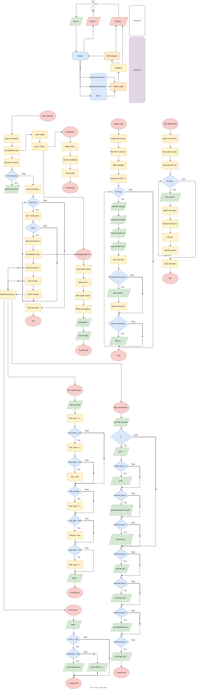

From my research I have found that the chance of wildfires drastically increases according to the 30/30/30 rule. When the wind speed is above 30km/h, the temperature is above 30ºC and the humidity is below 30%.
My product will use this along with another temperature threshold to detect when a fire is at risk of starting and when one has begun. The highest recorded temperature in the shade in Ireland was 33.3ºC. I want to set the fire detection temperature as low as possible for the earliest possible response time. Hence, I will set the temperature to be 35ºC to not allow for false detections on a hot day, along with a light intensity sensor to detect if the area is indeed in shade.
I found that a light intensity above 1000 - 2000 lux is equivalent to being outside during a dull day. The equivalent value for the light intensity sensor is between 100 – 200. I set the threshold for the sensor to 100 to detect if it was outside of shade, even on dull days.
I plan on using an anemometer or wind force reader to have a sensor for wind speed. These, however, seem to be too expensive or time consuming to make so for demonstration purposes I used a potentiometer to be able to vary the wind speed value, and I will swap to an anemometer if I have time.
Other companies have made early fire detection systems such as the Bosch Dryad early forest fire detection system. This system uses a different approach with a gas sensor to detect a forest fire in its early stages. While my idea cannot detect a fire as accurately as the Bosch system as it only depends on temperature, it is able to predict fires before they occur from the environmental data collected.
I decided to use a microbit originally due to its cheap cost and ease of use. This backfired as it proved unreliable with the serial write. Due to this, I swapped to the Arduino uno r4 as it was still easy for me to use while being cheap. I used the DHT11 sensor to give me temperature and humidity data. I used the MONK MAKES sensor board v1g for light intensity. These sensors were made to work with the microbit but they worked with the Arduino as well.
A forest fire prediction and detection system capable of being deployed on a large scale. For this, each device must be small, cheap, and power efficient.
It must be able to clearly warn and alert the end user of a fire or a potential fire with an intuitive warning system.
It must be adapted to the Irish climate to be able to be based here with the possibility of changing the parameters for other climates.
The device should be able to process the data and store it for later use.
Be an asset to fire watchers to help them with fire detection and prevention.
Communicate to the user the current fire risk and if there is an ongoing fire through the use of four LEDs.
Convey this message to the user through messages corresponding to the current state of the LEDs.
Display the data received from the sensors in real time and log it in a database for potential analysis in the future.
DHT11 Humidity and temperature sensor
The light sensor on the MONK MAKES senor board
Accelerometer on Microbit for wind speed
To find the wind speed, I will use the provided example from the brief for the microbit wind measuring device. With this data, I will find the force required to move the flap by a certain number of degrees. Using this, I will find the wind speed from the Drag formula (Fd = 0.5CdpAv^2). An alternate method to find the wind speed is to use an anemometer such as the kittenbot weather station; however, this would require more sensors (most of which I would not be using), increasing the cost of the overall system.
Each variable from the 30/30/30 rule will have an LED. There will be a low, moderate, and high fire risk message based on if the values cross the 30/30/30 threshold. For example, if 2 of these values are above/below their threshold, then 2 LEDs will light up. Along with this, there will be a warning if there is a fire with a bold red message and a separate LED.
The system will detect if the device resides in shade or not and place the fire and temperature risk factor as a potential fire and risk factor if the temperature crosses the 30 or 35 degree Celsius threshold. This will make the highest risk LED flash, showing it as a potential risk factor. For example, if there is a moderate risk with temperature being a risk factor, then the 1st LED will be on and the second will flash, indicating a possible moderate or a low risk.
The system will derive the rate of spread of fire from the 10% windspeed rule and show it to the user.
The board I will use for this project is the microbit due to its low power usage, cost, and simplicity. I will code the board in MakeCode and create the data logger from Thonny.
I will code the data logger using an SQLite database in Python in Thonny.
An option to run what-if scenarios will be available for the microbit to simulate a risk or disaster.
There will be the ability to reset microbit with the buttons provided on the microbit. This is for ease of use to set up. Another benefit of this is the ability to reset the microbit in person if it sounds a false alarm.
I originally began work on the project in MakeCode for the microbit with the assumption that I would have time for a wind speed/force sensor. The microbit was unable to transfer all the data I needed to fulfil my design objectives reliably. This led me to switch over to an Arduino which I coded in Visual Studio Code. I found the switch not too difficult once I got used to it, but it took a while to do so.
The wind speed sensor was scrapped as an idea due to lack of time. I was planning to buy a weather station kit for the microbit but that proved too costly. I was unable to find a wind speed sensor for sale on its own, so I scrapped the idea. My next idea was to make a wind force sensor, similar to the one provided in the brief. This idea was scrapped again as it required an accelerometer, was large and bulky, and it was more complex as you had to convert wind force into wind speed. The microbit had a built-in accelerometer while the Arduino does not, so it prevented me from using this sensor. For these reasons, I used a potentiometer as a placeholder that was able to vary the values for wind. If I were to implement this product, I would make an anemometer from a small electric motor and 3D printed cups. This would be cost effective and would provide the same output as the potentiometer as they both are analog. This would make my code easily adapted to a sensor like this.
The Arduino was coded in VSCode in C++. It is responsible for sending the data to Thonny and turning LEDs on or off based off the processed data. The green, yellow and orange LEDs represent low, moderate and high risk of a fire starting respectively. The red LED indicates an ongoing fire. A flashing LED indicates a potential reading. For example, if the green LED is on and the yellow LED is flashing, it shows a potential moderate or a low risk.
The data was processed in Thonny. My code took in the raw values for temperature, humidity, wind speed, and light intensity. It stored these values in a database and then used these values to calculate the risk of fire by incrementing a risk factor counter for each of the values when their set threshold is reached. It then wrote these values back to the Arduino which used it for the LEDs.
The Arduino uno was the motherboard of the whole project. It has a digital input for the DTH11 temperature and humidity sensor, 2 analog inputs for the light intensity sensor and potentiometer, and 4 digital outputs for the LEDs. The whole circuit was powered with 3v as all the components required it or ran fine with no data loss or crashes.
I created a truth table with every combination of inputs and their respective outputs. I then tested my risk calculator and fire detection system by making all the input combinations into a list and iterating each of these combinations through my risk calculator and fire detection system. I then compared both values and found that they were in accordance with my truth table.
I created 2 what-if scenarios for drought and stormy conditions. I struggled to find values for these conditions, so they were made up based on reasonable assumptions. It allows you to input which condition and for how long you want to test it, and it will print the risk of fire for each day tested.
I created a high-level flowchart and a system architecture diagram to aid in providing a more comprehensive insight into how my project works. I colour coded everything in these diagrams to make it even easier to understand, while looking aesthetically pleasing.
This was my least favorite part but includes most of the text. I found it annoying to record milestones and explain what I did as I wanted to just keep working on the project. It was especially annoying when I had to redo parts, and I would waste time not only on redoing it, but the write-up as well.
What didn't is a better title, but the part that gave me the most trouble was timing the LEDs to flash on and off. This was due to the delay required for the DHT11 sensor. It stopped me from being able to flash the LEDs by using the delay() function as the DHT11 had to wait 2 seconds to prevent it from crashing. In these 2 seconds it was impossible to communicate with the Arduino to flash the LEDs.
The solution was to measure the time using the millis() function for the code responsible for sending the data to Thonny. This allowed me to use the delay() function to flash the risk LEDs, without interfering with the rate of the sensor outputs.
Started project research (03/12/25) Christmas break (19/12/25-5/1/26) Swapped over to Arduino from the Microbit (26/1/26) Mocks and midterm break (3/2/26-2/3/26) Finished all the coding, hardware, and testing by (11/3/26)
I created a system that can detect wildfires and wildfire risk based on changing environmental conditions. The system is small, lightweight, power efficient, and affordable. This allows it to be deployed on a large scale, which was the main design goal of this project, so I’d say I was successful.
I would improve upon this project if I had time by adding more hardware. I would make an anemometer to find wind speed as the device cannot give true wind speed results as of now. Another component I would add is an antenna to send the data into a central database and allow for the readings to be read from a remote location. This would benefit fire watchers by allowing them to remotely monitor a whole forest.
